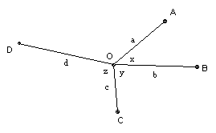

The points O, A, B, C, D in the plane are such that the six triangles OAB, OAC, OAD, OBC, OBD, OCD all have area at least 1. Show that one of the triangles must have area at least √2.
Solution

Take OA = a, OB = b, OC = c, OD = d, ∠AOB = x, ∠BOC = y, ∠COD = z, with the configuration as shown. Now we have:
|OAB| = ab |sin x|
|OBC| = bc |sin y|
|OCD| = cd |sin z|
|OAC| = ac |sin(x+y)|
|OAD| = ad |sin(x+y+z)|
|OBD| = bd |sin(y+z)|
But 2 sin(x+y+z) sin y + 2 sin x sin z = cos(x+z) - cos(x+2y+z) + cos(x-z) - cos(x+z) = cos(x-z) - cos(x+2y+z) = 2 sin(x+y) sin(y+z). So multiplying through by abcd/2 we get ± |OAB| |OCD| ± |OBC| |OAD| ± |OAC| |OBD| = 0. Two of the signs must be the same. So we get that the product of two of the areas equals the sum of two other area products and hence is at least 2. Hence one of the two areas in the product must be at least √2.

© John Scholes
jscholes@kalva.demon.co.uk
28 Dec 2002
Last corrected/updated 28 Dec 02